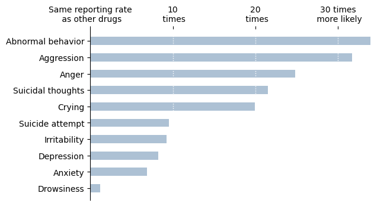

Valeria Fraga
My name is Valeria Fraga, I am currently in my last semester at the University of Michigan as part of the Master's in Health Informatics program. I am an aspiring data scientist who is looking forward to making the leap from academia to working in the health tech space.
SI 649: Visualizations
The following visualizations were created as part of the course SI 649.
